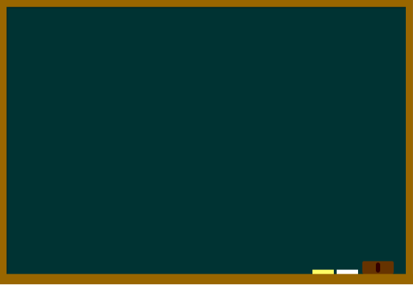
聖地巡礼なら
岐阜でしょ!!
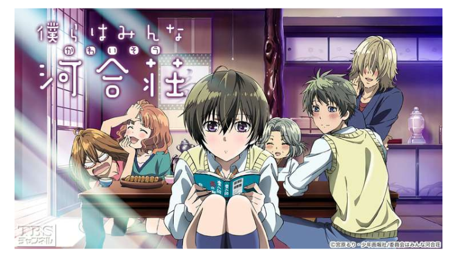
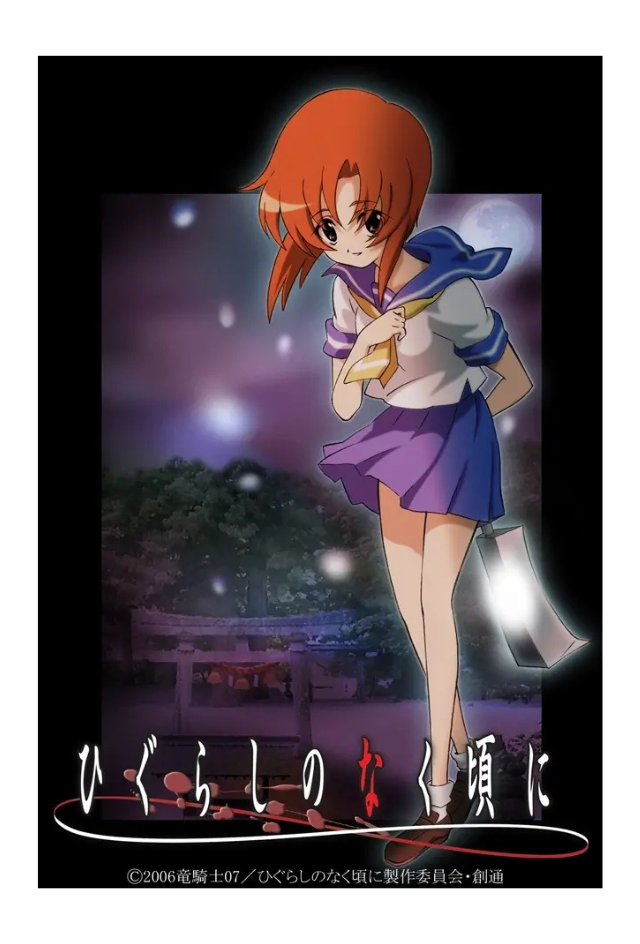
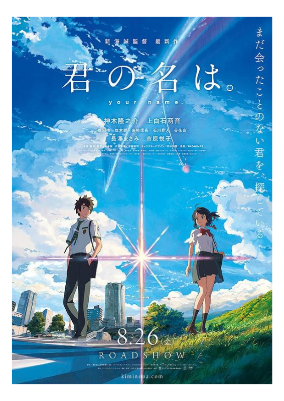
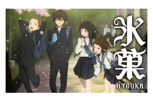
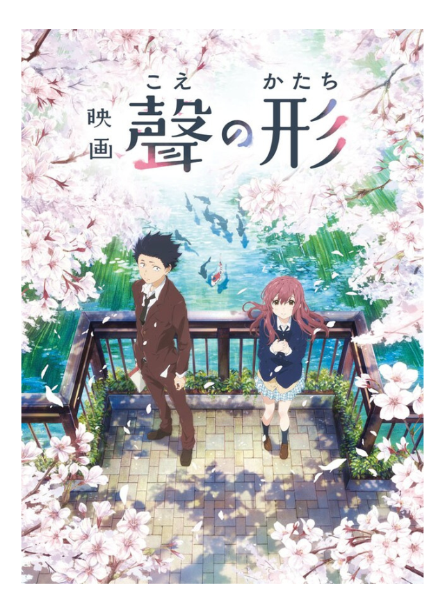
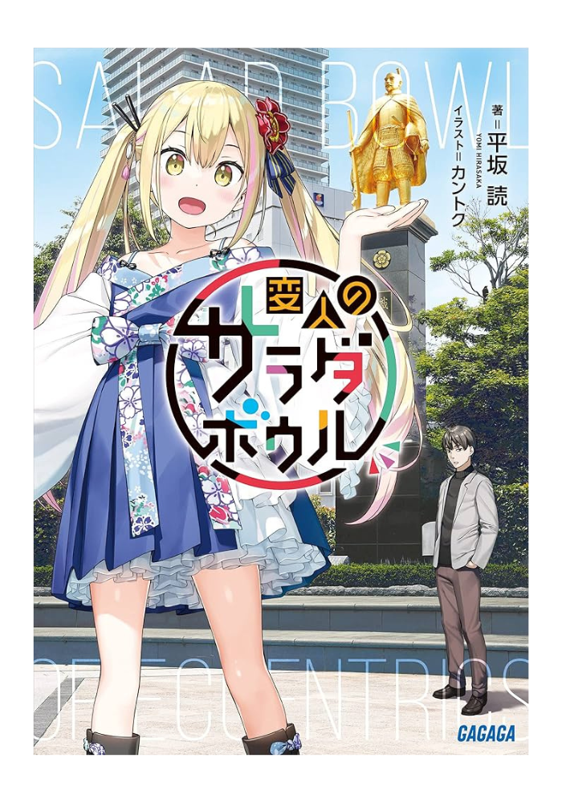
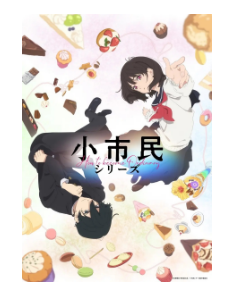
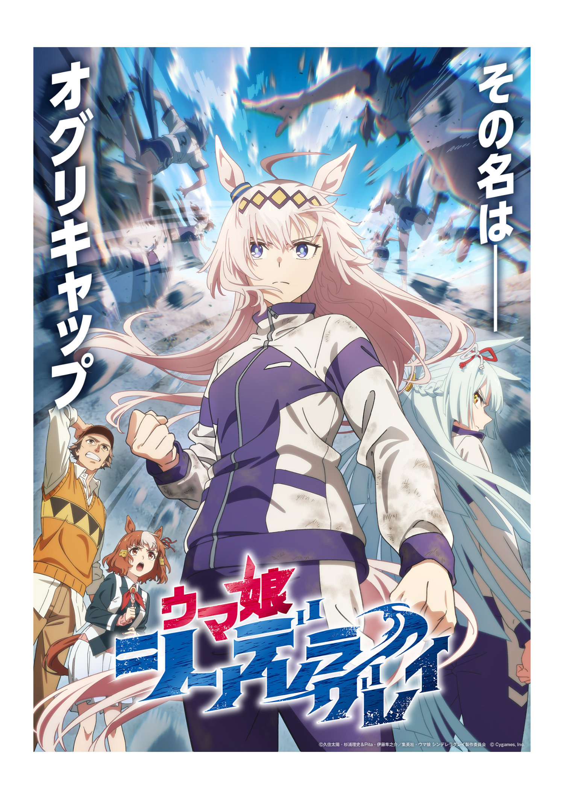
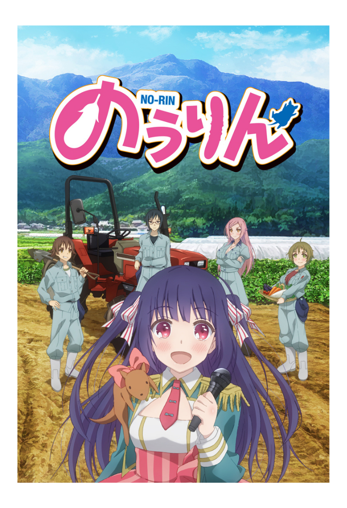
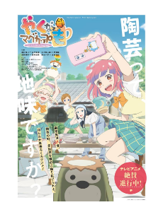
Let's watch Gifu Anime!!
君の名は。
君の名は。
ジャンル
ファンタジー・青春
あらすじ
東京に暮らす男子高校生・瀧（たき）と、山深い田舎町で暮らす女子高校生・三葉（みつは）。出会うはずのない二人は、ある日突然、体が入れ替わっていることに気づく。戸惑いながらも打ち解けていく二人だったが、やがてその裏に隠された過酷な運命に直面することになる。
飛騨古川駅
瀧が三葉を探しに来るシーンで登場。駅の跨線橋からの眺めは、作中と全く同じアングルで撮影できる超定番スポットです。
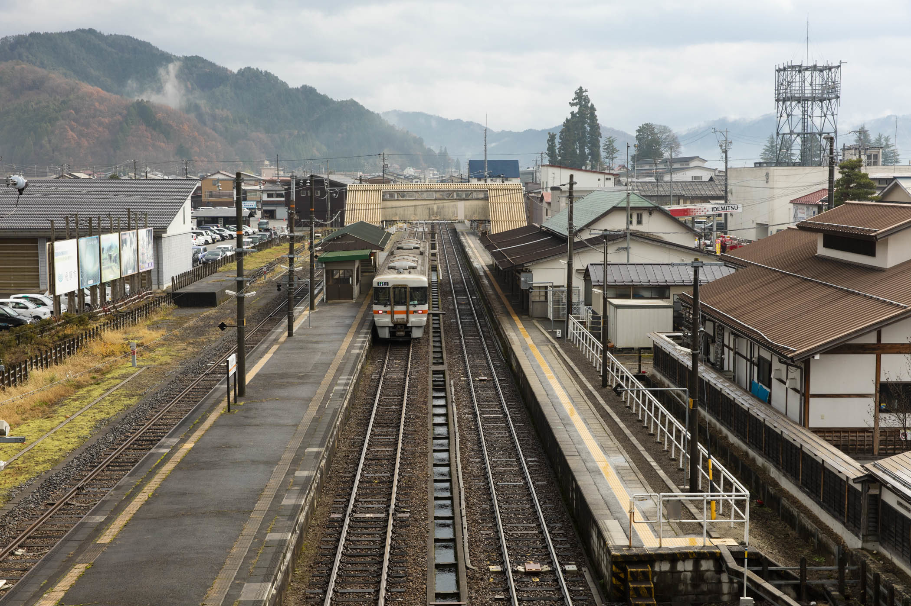
ひぐらしの
なく頃に
ひぐらしのなく頃に
ジャンル
ミステリー・サスペンス
あらすじ
昭和58年、都会から雛見沢村（ひなみざわむら）へ転校してきた前原圭一。仲間たちと賑やかな日常を過ごしていたが、村に伝わる祭「綿流し」の日に起きる連続怪死事件をきっかけに、平和な毎日は惨劇へと変貌していく......
古手神社（白川八幡神社）
ヒロイン・古手梨花が巫女を務める神社のモデル。絵馬掛け所には、ファンによるハイレベルな痛絵馬が並びます。
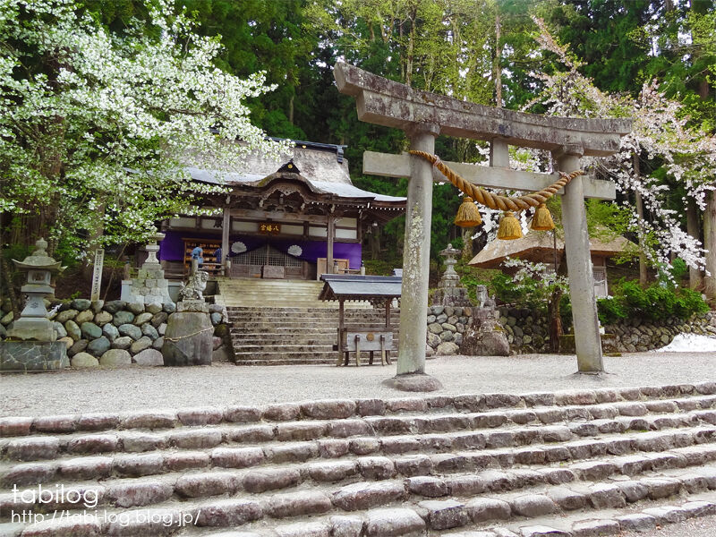
ウマ娘
シンデレラグレイ
ウマ娘
シンデレラグレイ
ジャンル
スポーツ
あらすじ
のちに「怪物」と呼ばれる伝説のウマ娘・オグリキャップが、地方競馬であるカサマツ（笠松）から中央競馬へとのし上がっていく姿を描く、熱きサクセスストーリーです!
笠松競馬場
オグリキャップがデビューした場所。コースと観客席の距離が非常に近く、作中で描かれる「地方競馬の熱気」をそのまま感じることができます。
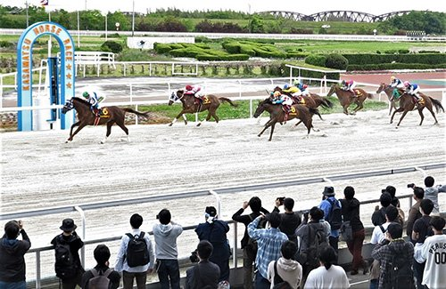
聲の形
聲の形
ジャンル
ヒューマンドラマ・青春
あらすじ
ガキ大将だった少年・石田将也は、転校生としてやってきた聴覚障害を持つ少女・西宮硝子へのいじめをきっかけに、自身も周囲から孤立してしまう。数年後、心を閉ざしたまま高校生になった将也は、もう一度彼女に会って謝罪することを決意する。
美登鯉橋（みどりばし）
作品の象徴とも言える場所。将也と硝子がパンを投げて鯉に餌をあげるシーンなどで何度も登場します。
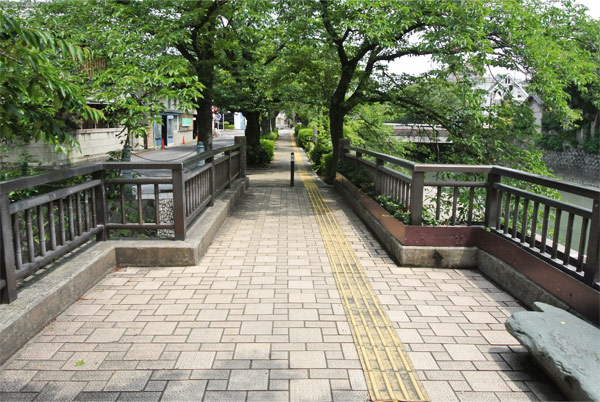